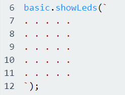
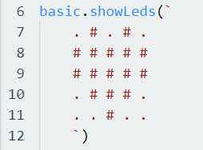
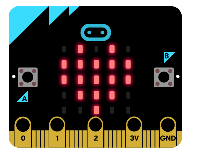
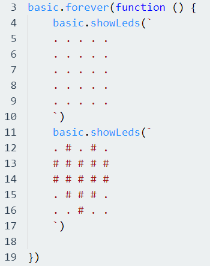

I forrige oppgave så klarte vi å vise tall og tekst. Vi jobbet en del med Basic delen og med Input delen, og det samme skal vi gjøre her også. I denne oppgaven så skal vi benytte oss av showLeds funksjonen som vi finner i Basic delen i Micro:Bit. Med showLeds funksjonen så kan vi lage mange tegninger og illustrasjoner, og vi kan kombinere flere showLeds funksjoner for å lage enkle animasjoner. Vi skal nå ta for oss et praktisk eksempel for å tegne et hjerte. Slik ser showLeds funksjonen når den er tom:
Som vi ser her, så er det slik vi setter opp showLeds funksjonen i Micro:Bit, og prikkene (punktum) i parentesene representerer hver LED-lys på Micro:Bit – brikken. Hvis vi begynner med å skrive basic.showLeds så vil Micro:Bit editoren gi oss forslaget om å fullføre kodeblokken for oss. Vi trykker enter for å få editoren til å fullføre kodeblokken for oss, siden det er enkelt å få error meldinger hvis vi prøver å skrive hele kodeblokken manuelt. Vi skal nå prøve å lage et hjerte i Micro:Bit:
Slik vil dette se ut i kodeform, Hashtagene (#) indikerer hvilke LED-lys som skal lyse i Micro:Bit. Slik vil resultatet se ut i Micro:Bit sin brikke:
Hvis vi da kombinerer en tom LED funksjon med funksjonen som tegner et hjerte så kan vi lage en enkel animasjon som får hjertet til å blinke, og for å få dette til fungere så må vi sette begge LED funksjonene inn i en forever funksjon som også finner i Basic biblioteket. Koden for dette vil da se slik ut:
Da er du klar for å lage tegninger og enkle animasjoner i Micro:Bit. Lykke til!